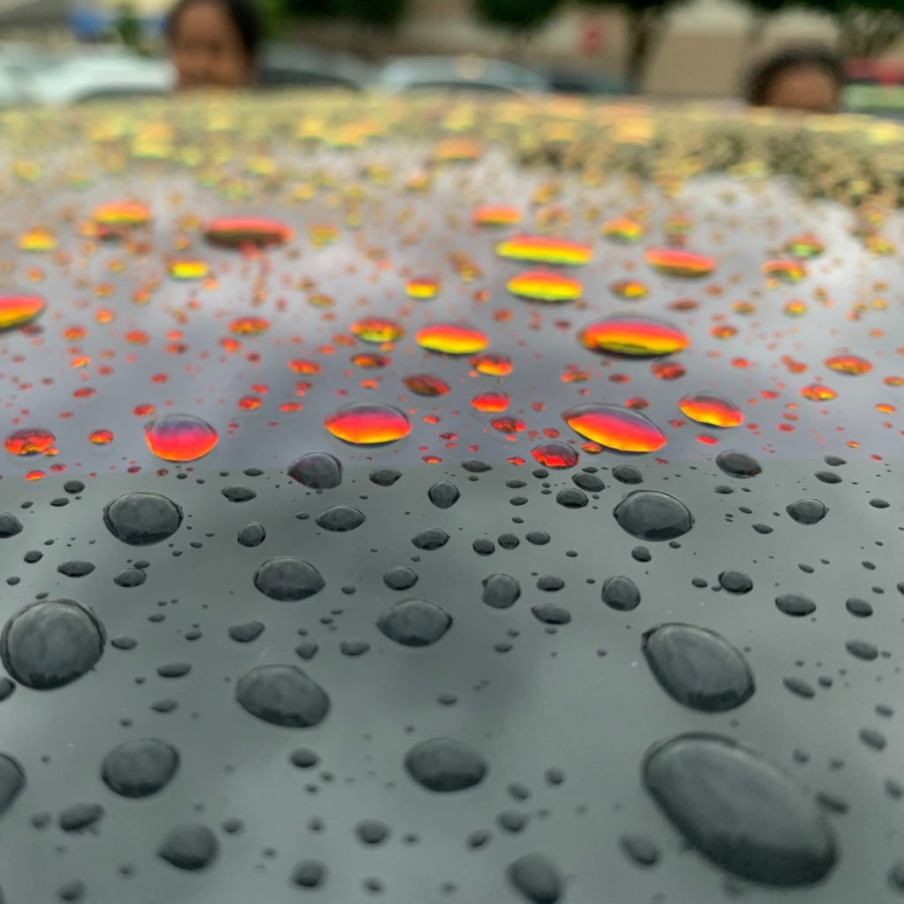
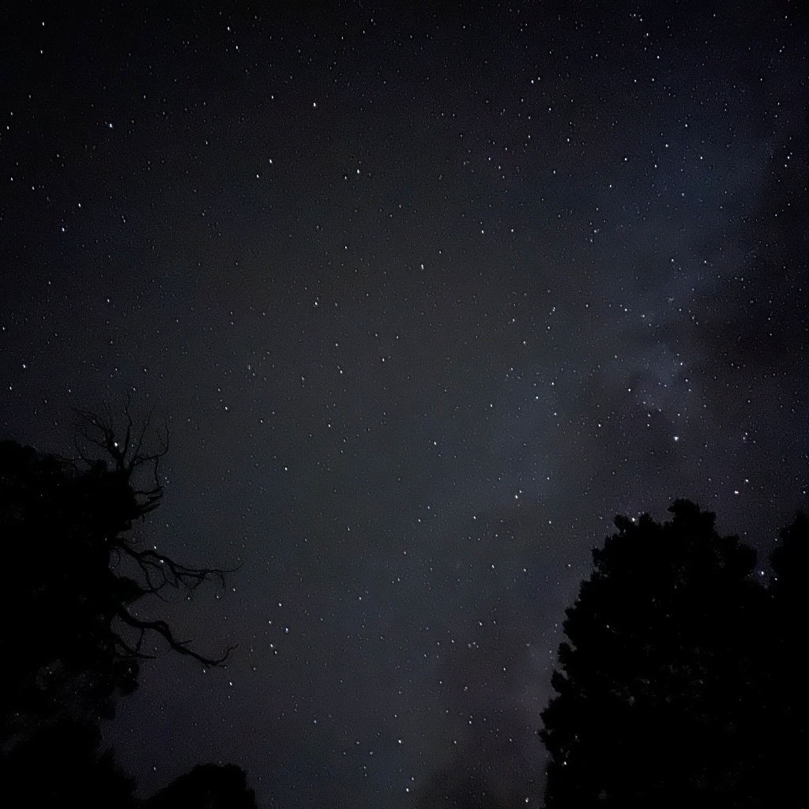
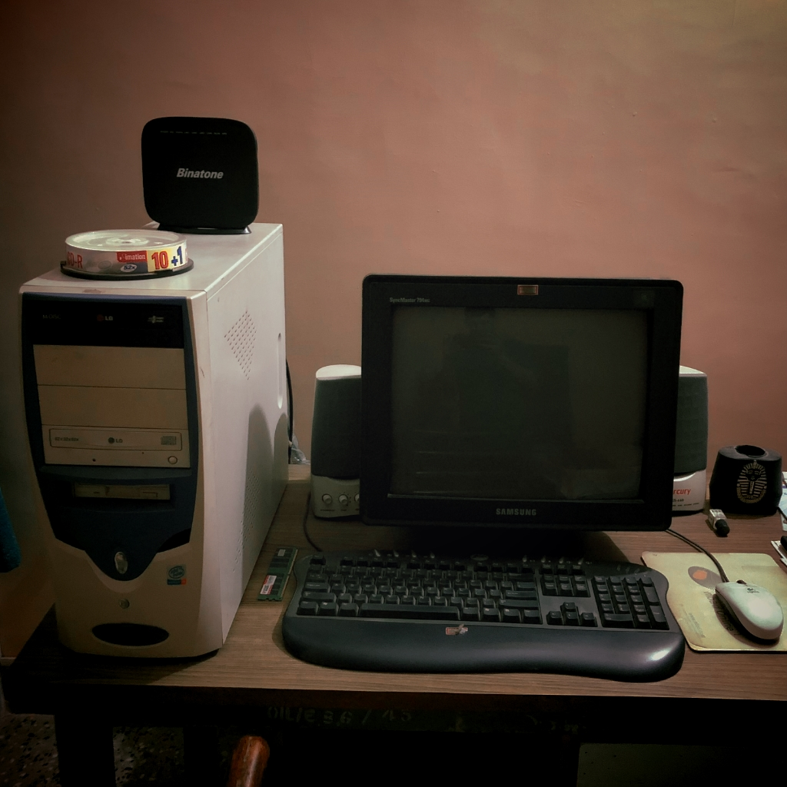
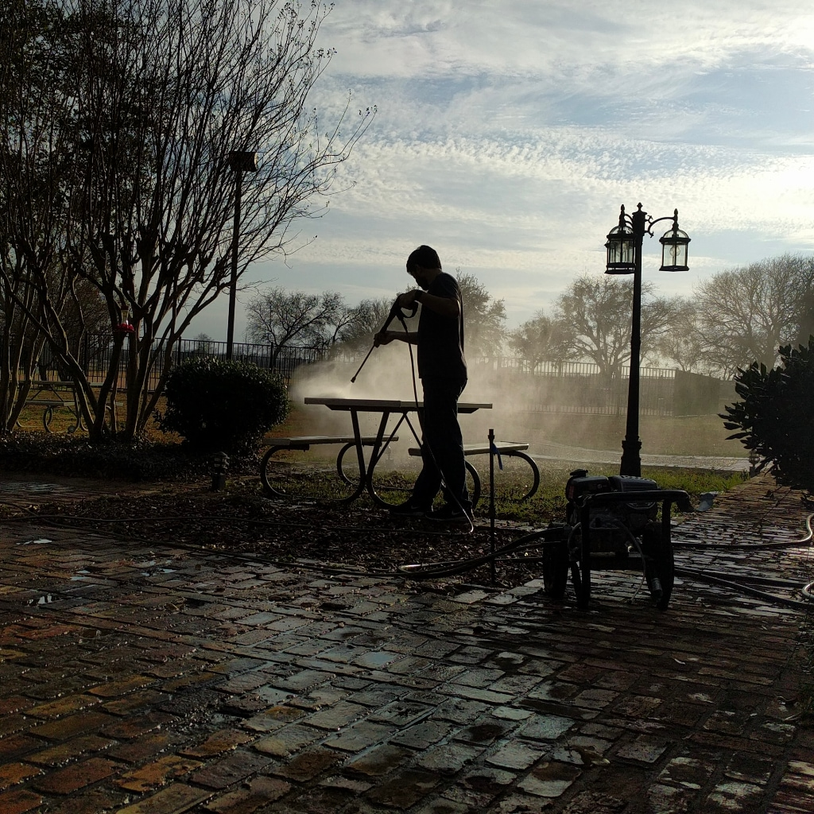

Co-founder & CTO at Cactus · Rails builder · AI enthusiast
I'm Avinash — co-founder & CTO of Cactus, where we're building AI-powered home services. We went through YC (X25) and are heads-down shipping. My co-founder Ajit and I have been friends since 2006 — 18+ years before we ever started a company together.
I fell in love with Ruby on Rails a few years back and never looked back. My philosophy: when I have a startup, I'm using Rails. Simple, fast, and it gets out of your way. I gave a lightning talk at Rails World 2024 about building an AI-enabled marketplace on a monolithic Rails app — because monoliths work, and don't let anyone tell you otherwise.
I started coding in 5th grade with Turtle graphics. Got deep into Linux in college — founded the FOSS club at Amrita University, built custom distros, ran OpenSolaris and Fedora. Then a friend's MacBook at UT Dallas changed everything, and I spent 13 years in the Apple ecosystem. In 2024, I found my way back to Linux via Omarchy on a Framework 13. The circle is complete.
Beyond the screen — I'm guided by my spiritual roots as a devotee of Amma. I'm a husband and dad to two boys. I believe the right order of things is: health first, family second, everything else after. My guiding principle: "It's possible."
Lightning talk at Rails World 2024 — shared insights from building a marketplace on Rails with AI features woven in. Monoliths are underrated. [ Watch Video | Slides ]
The setup that keeps me moving.
One of my desk setups. MacBook is my goto machine.

Rain drops on Tesla Model 3 roof.

Night Sky over Ruidoso, New Mexico. Shot on iPhone 13 mini.

My desktop from the past — running the beloved Windows XP.
Canoeing with my wife at Lady Bird Lake, Austin.

When I'm not coding, I love to spend time volunteering.
© 2023 Avinash Joshi. All rights reserved.